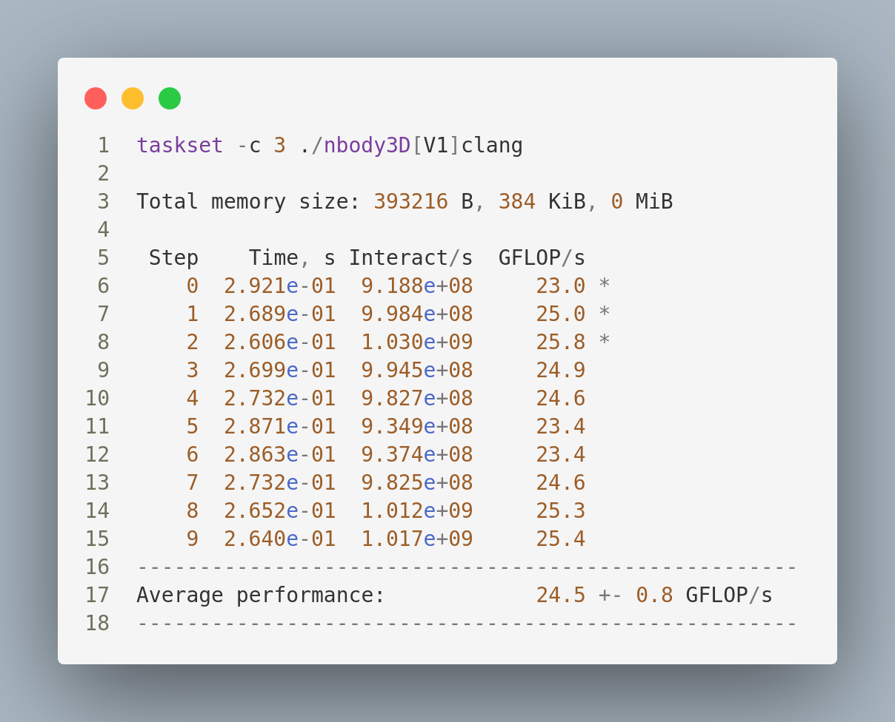
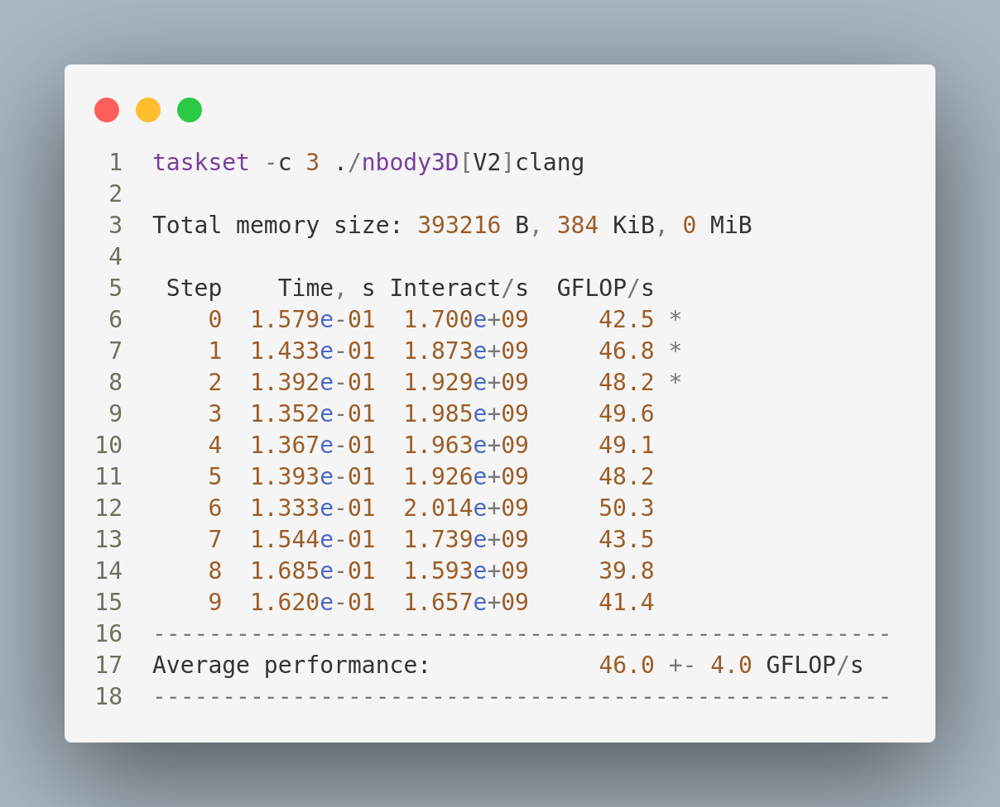

Introduction
The n-body problem is a classic problem in physics and astronomy that involves predicting the motion of a group of celestial bodies (such as stars or planets) under the influence of their mutual gravitational forces. The problem is to determine the motion of each body in the group, given the initial positions and velocities of all bodies, and the masses and gravitational forces between them.
The n-body problem can be formulated using Newton's laws of motion. Newton's laws state that the acceleration of a body is proportional to the net force acting on it, and that the force acting on a body is equal to the mass of the body multiplied by its acceleration.
The cost of the solution
Solving the n-body problem using Newton's laws of motion can be computationally expensive, especially for large values of n (the number of bodies). The cost of the computation increases rapidly as the number of bodies increases, due to the fact that the number of interactions between bodies is proportional to the square of the number of bodies.
There are several reasons why the n-body problem can be computationally expensive: The number of calculations required increases with the square of the number of bodies, making it infeasible for large n. The equations of motion are non-linear, which makes it difficult to find analytical solutions.
The initial set-up
Before start mesuring the performances first we need to set up the processor frequency
These are my processor's information
Architecture: x86_64
CPU op-mode(s): 32-bit, 64-bit
Address sizes: 39 bits physical, 48 bits virtual
Byte Order: Little Endian
CPU(s): 8
On-line CPU(s) list: 0-7
Vendor ID: GenuineIntel
Model name: Intel(R) Core(TM) i7-7700HQ CPU @ 2.80GHz
CPU family: 6
Model: 158
Thread(s) per core: 2
Core(s) per socket: 4
Socket(s): 1
Stepping: 9
Frequency boost: enabled
CPU max MHz: 2801,0000
CPU min MHz: 800,0000
BogoMIPS: 5599.85
Flags: fpu vme de pse tsc msr pae mce cx8 apic sep mtrr pge mc
a cmov pat ...
Virtualization features:
Virtualization: VT-x
Caches (sum of all):
L1d: 128 KiB (4 instances)
L1i: 128 KiB (4 instances)
L2: 1 MiB (4 instances)
L3: 6 MiB (1 instance)
NUMA:
NUMA node(s): 1
NUMA node0 CPU(s): 0-7
Vulnerabilities:
Itlb multihit: KVM: Mitigation: VMX disabled
L1tf: Mitigation; PTE Inversion; VMX conditional cache flushe
s, SMT vulnerable
Mds: Mitigation; Clear CPU buffers; SMT vulnerable
Meltdown: Mitigation; PTI
Mmio stale data: Mitigation; Clear CPU buffers; SMT vulnerable
Retbleed: Mitigation; IBRS
Spec store bypass: Mitigation; Speculative Store Bypass disabled via prctl
and seccomp
Spectre v1: Mitigation; usercopy/swapgs barriers and __user pointer
sanitization
Spectre v2: Mitigation; IBRS, IBPB conditional, RSB filling, PBRSB-
eIBRS Not affected
Srbds: Mitigation; Microcode
Tsx async abort: Not affected
We will fix the core 3 on 2.7 GHZ :
sudo cpupower -c 3 frequency-set -d 2.70 GHz
Performance
1. Initial perforamnce
With -O1 optimization flag and gcc compiler, This is the resulted performances
Using Ofast Flag
1. transforming AoS into SoA
On GCC
On Clang
2. Eliminating theuseless divisons and replacing pow with multiplication
On GCC
On Clang
4. Unrolling loops using #pragma unroll directives
On GCC
On Clang
5. using compiler auto-vectorization
On GCC
On Clang
6. Optimizing using AVX2-256 Intrinsics Instructions
On GCC
On Clang
Test the simulation using different numbers of particles that fit into different cache levels
Cache L1
In this processor the L1 cache has 128kb size with cache line of 64 bytes, so to fit into L1 cache we need about 5000 particles
In the comparision we used The V6 optimization wich uses the Avx2 Intrinsics
On GCC

On Clang
Cache L2
L2 cache has 128kb size with cache line of 64 bytes, so to fit into L1 cache we need about 5000 particles
In the comparision we used The V6 optimization wich uses the Avx2 Intrinsics
On GCC
On Clang

Cache L3
L3 cache has 6mb size, so to fit into L2 cache we need about 250000 particles
In the comparision we used The V6 optimization wich uses the Avx2 Intrinsics
On GCC
On Clang